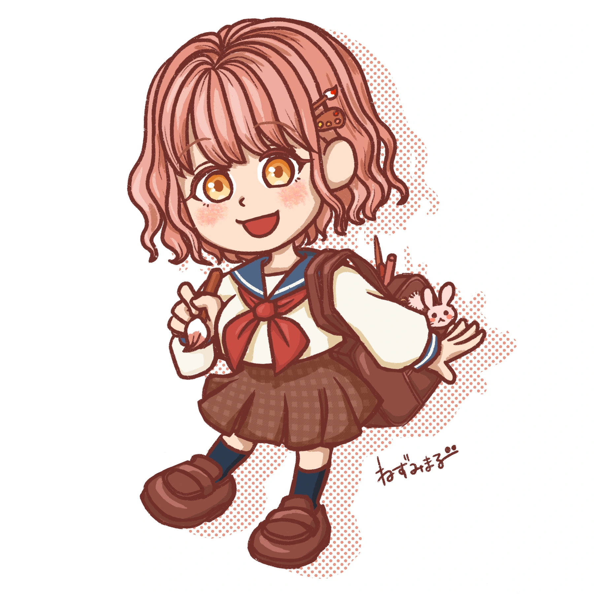
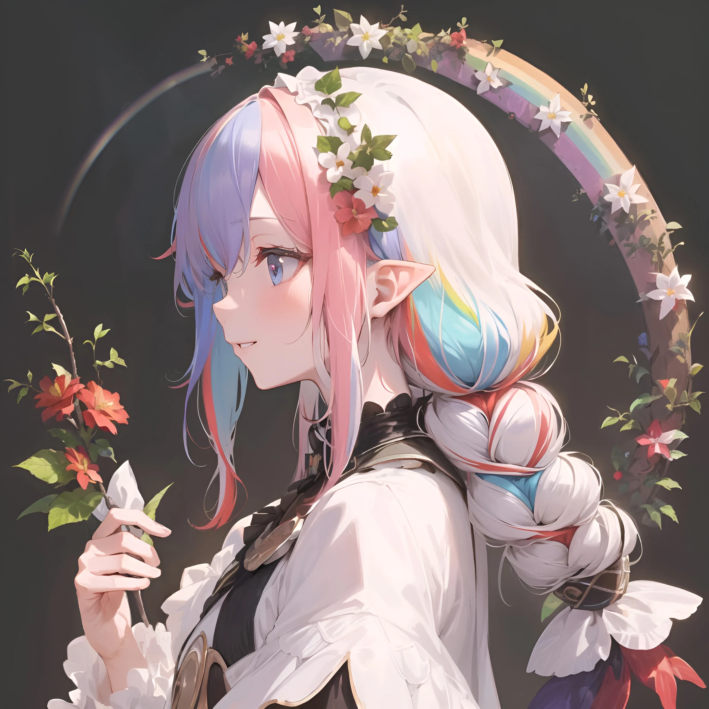
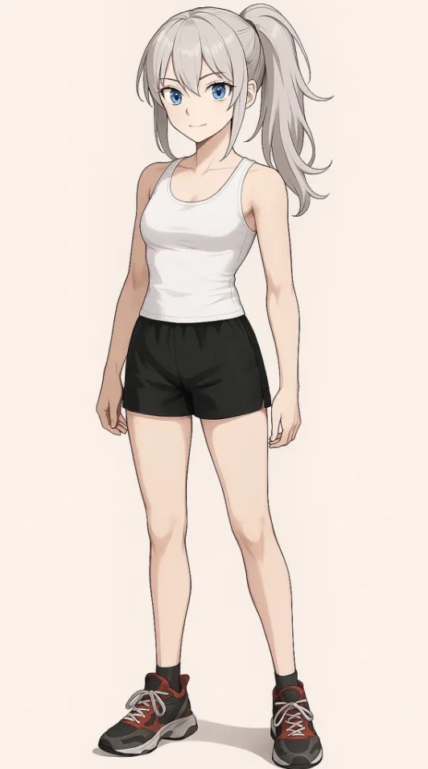
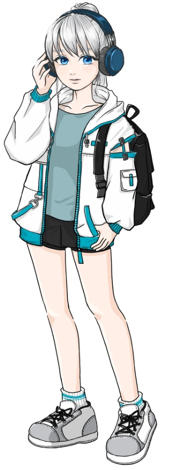
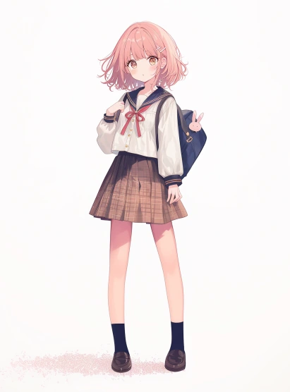
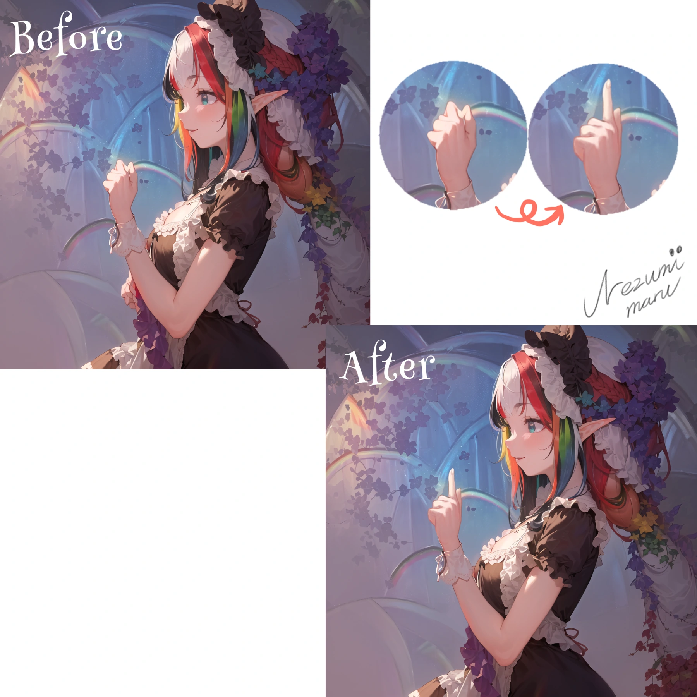
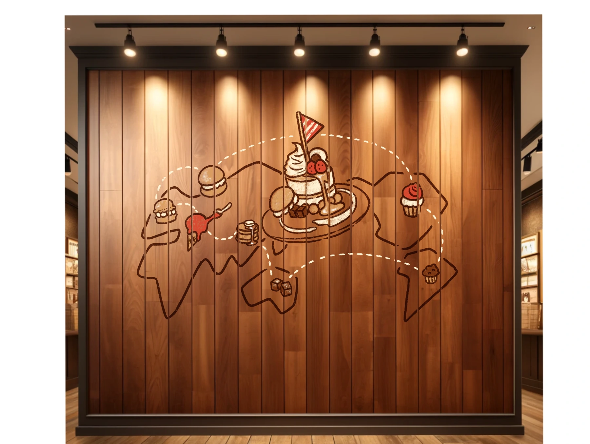

部分的な違和感を直したい
指先や表情などを、元の画像になじむように修正します。
AI × HAND DRAWING
AI画像の手描き修正・加筆／キャラクター制作
「この雰囲気は好き。でも、ここだけ直したい。」
「性格や世界観まで伝わるキャラクターにしたい。」
そんなご相談に、手描きで応えます。

指先や表情などを、元の画像になじむように修正します。
設定を加えたキャラクター制作や、デフォルメ化をご相談いただけます。
漫画の物語やサムネイルの演出に合う、手描きの加筆を行います。
SELECTED WORKS
元の素材と、手描きで制作した部分を添えてご紹介します。
画像をタッチすると、大きくご覧いただけます。
CASE 01
ユニット「夢想詩葉」で、AI生成画像をもとに手描きの修正・加筆を行った作品です。2023年7月の展示会「Nコレ大阪」で、会場投票1位の「Nコレ大阪賞」を受賞しました。

CASE 02
ご依頼者さまがAIで作った画像を参考に、性格や趣味が伝わる衣装・小物・表情を組み込み、オリジナルキャラクターを制作しました。


CASE 03
FORTNITEのキャラクターをゲーム内で撮影し、サムネイルのシーンに合わせて顔の表情を手描きで修正・加筆。ハロウィンのメイクにも展開しました。
この事例の元画像は、AI生成画像ではなくゲーム内で撮影した画像です。
CASE 04
AIで作成されたキャラクターを参考に、特徴を拾いながら、ねずみまるの絵柄でデフォルメイラストを描きました。

CASE 05
AI画像の指先など、不自然な部分を手描きで修正。元の色や光、描き込みに合わせ、全体の雰囲気を保ちながら仕上げます。

右上の拡大部分では、指先の修正前後を比べられます。
CASE 06
AI漫画に使うAI生成の背景へ、お話の重要な展開に関わる壁画のイラストを手描きで加えました。物語に必要な内容を、背景になじむタッチで描いています。

LET’S MAKE IT YOURS
残したい雰囲気、直したい部分、使いたい場所をお聞かせください。部分修正か、描き起こし・キャラクター制作か、目的に合わせてご提案します。
料金は、修正の範囲・点数・用途に応じて個別にお見積もりします。
AI画像の手描き修正を相談する